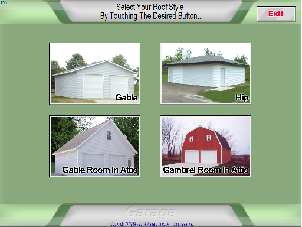
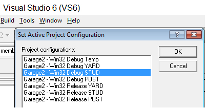

Garage (a.k.a. STUD)
A legacy C++ application built in VS6 that allow users to create a basic 4-sided building. While garage hosts 3 application (Garage, Residential Postframe (post), Yard) Garage is a application itself.
There are 3 types of garage builds (Regular/stud frame, Residential post frame, and yard buildings
To open each of the 3 types of garage application, you have to open the application in Visual Studio 6, and then you have to select one of the 3 arguments to run the proper selected build.
Initital Screen
 Highlights
- Material list.txt file can be found under mes/appName. Use it to view the materials ordered for the last transaction
- Allow you to build regular or stud frame garages
- To switch run configurations > VS6 > Build > Set Active Config > highlight the run config you want > ok
- Garage and yard are almost identical
- Inserting pool or hot tub (not estimated though)
- Residential Postframe is similar to polebarn
- All garage information is stored inside INI files
- The garage program features three basic types of INI files: step screen INIs, garsku INIs, and estimation INIs.
Setup
- Visual Studio 6
- Consult Team Member to install VS6
- DSW extension is the file you can click on to run the application automatically on your computer
- Folder Structure

- Adding a screen